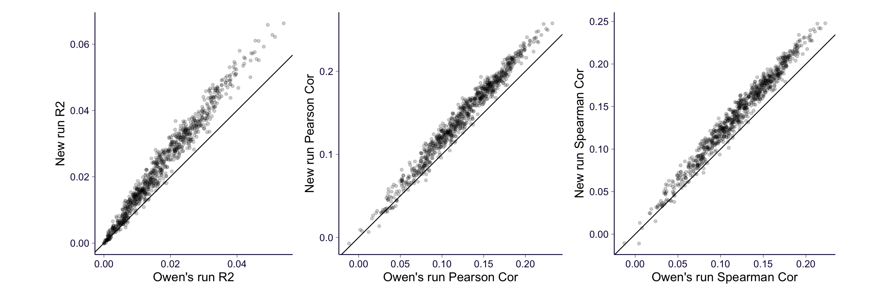
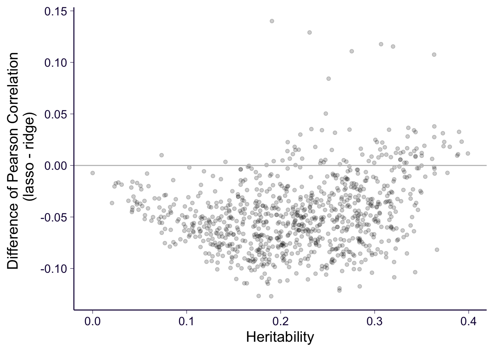

Genome-wide ridge/lasso regression
01 November, 2020
rm(list = ls())
library(ggplot2)
theme_set(theme_bw(base_size = 15))
source('https://gist.githubusercontent.com/liangyy/43912b3ecab5d10c89f9d4b2669871c9/raw/3ca651cfa53ffccb8422f432561138a46e93710f/my_ggplot_theme.R')
library(dplyr)
options(stringsAsFactors = F)
library(patchwork)1 About
Here I ran genome-wide ridge regression using code implemented at ../methods/gw_ridge. In brief, the data is split into 5 folds and we predict 1 fold using ridge regression model trained using the rest 4 folds where the hyperparameter \(\theta_g\) is selected via an inner round of cross-validation among the 4 folds of training data.
Here I present the result along with the OmicKriging runs done by Owen.
The genome-wide lasso and elastic net regression is done using implementation at ../method/gw_lass. Due to the computation burden, I did not do full round of 5-fold cross-validation to select hyperparameter (the inner CV). Instead, I just splitted the training data into 5 folds and used the 4 folds to train and 1 fold for validation.
2 Load data
My results (ridge).
df_new = read.table('~/Desktop/tmp/ukb_idp/gw_ridge/gw_ridge_default_theta_g_fold_5_5.tsv.gz', header = T)Owen’s runs.
nbatch = 444
df_owen = list()
for(i in 1 : nbatch) {
df_owen[[length(df_owen) + 1]] = read.table(paste0('~/Desktop/tmp/ukb_idp/owen_okriging/okriging_cv_', i, '_summary.txt'), header = T)
}
df_owen = do.call(rbind, df_owen)
df_owen$gene = stringr::str_replace(df_owen$gene, '\\.', '-')Merge the two.
df_merge = inner_join(df_new, df_owen, by = c('phenotype' = 'gene'))Load lasso results.
nbatch = 444
df_lasso = list()
for(i in 1 : nbatch) {
df_lasso[[length(df_lasso) + 1]] = read.table(paste0('~/Desktop/tmp/ukb_idp/gw_lasso/batch', stringi::stri_pad_left(i - 1, 3, 0), '.gw_lasso.performance.tsv'), header = T)
}
df_lasso = do.call(rbind, df_lasso)
df_lasso$phenotype = stringr::str_replace(df_lasso$phenotype, 'x', '-')
# fill in zero for missing values since they are the worst performance
df_lasso[is.na(df_lasso)] = 0 And merge with the other results.
df_merge = inner_join(df_merge, df_lasso, by = 'phenotype', suffix = c('.ridge', '.lasso'))Load heritability estimates done by Owen. And merge with the other results.
df_h2 = read.table('~/Desktop/tmp/ukb_idp/owen_heritability/2020-08-11_idp-heritability-estimates.txt.gz', header = T)
df_merge = inner_join(df_merge, df_h2, by = c('phenotype' = 'gene'))Load elastic net results.
nbatch = 444
df_en = list()
for(i in 1 : nbatch) {
df_en[[length(df_en) + 1]] = read.table(paste0('~/Desktop/tmp/ukb_idp/gw_elastic_net/batch', stringi::stri_pad_left(i - 1, 3, 0), '.gw_lasso.performance.tsv'), header = T)
}
df_en = do.call(rbind, df_en)
df_en$phenotype = stringr::str_replace(df_en$phenotype, 'x', '-')
# fill in zero for missing values since they are the worst performance
df_en[is.na(df_en)] = 0
# add suffix to
colnames(df_en)[1:3] = paste0(colnames(df_en)[1:3], '.en')Merge with the other results.
df_merge = inner_join(df_merge, df_en, by = 'phenotype')3 Pairwise comparison: ridge vs Owen’s run
p1 = df_merge %>% ggplot() + geom_point(aes(x = r_squared, y = R2.ridge), alpha = 0.2) +
th +
geom_abline(intercept = 0, slope = 1) +
xlab('Owen\'s run R2') +
ylab('New run R2') +
coord_equal()
p2 = df_merge %>% ggplot() + geom_point(aes(x = pearson_r, y = Pearson.ridge), alpha = 0.2) +
th +
geom_abline(intercept = 0, slope = 1) +
xlab('Owen\'s run Pearson Cor') +
ylab('New run Pearson Cor') +
coord_equal()
p3 = df_merge %>% ggplot() + geom_point(aes(x = spearman_r, y = Spearman.ridge), alpha = 0.2) +
th +
geom_abline(intercept = 0, slope = 1) +
xlab('Owen\'s run Spearman Cor') +
ylab('New run Spearman Cor') +
coord_equal()
p1 + p2 + p3
Take-away:
- The new run is consistent with the previous result. Namely, an IDP with good result before also has good result in new run.
- The new run has slighly better performance since we are selecting \(\theta_g\) from a grid of values: 0.01, 0.05, 0.1, 0.2, …, 0.9. But in Owen’s run \(\theta_g = 1\) which is not ridge regression anymore.
4 Pairwise comparison: ridge vs lasso/elastic net
p1 = df_merge %>% ggplot() +
geom_point(aes(x = R2.ridge, y = R2.lasso, color = 'alpha=1'), alpha = 0.2) +
geom_point(aes(x = R2.ridge, y = R2.en, color = 'alpha=0.1'), alpha = 0.2) +
th +
geom_abline(intercept = 0, slope = 1) +
xlab('Ridge R2') +
ylab('Lasso/EN R2') +
coord_equal()
p2 = df_merge %>% ggplot() +
geom_point(aes(x = Pearson.ridge, y = Pearson.lasso, color = 'alpha=1'), alpha = 0.2) +
geom_point(aes(x = Pearson.ridge, y = Pearson.en, color = 'alpha=0.1'), alpha = 0.2) +
th +
geom_abline(intercept = 0, slope = 1) +
xlab('Ridge Pearson Cor') +
ylab('Lasso/EN Pearson Cor') +
coord_equal()
p3 = df_merge %>% ggplot() +
geom_point(aes(x = Spearman.ridge, y = Spearman.lasso, color = 'alpha=1'), alpha = 0.2) +
geom_point(aes(x = Spearman.ridge, y = Spearman.en, color = 'alpha=0.1'), alpha = 0.2) +
th +
geom_abline(intercept = 0, slope = 1) +
xlab('Ridge Spearman Cor') +
ylab('Lasso/EN Spearman Cor') +
coord_equal()
p1 + p2 + p3Take-away:
- For most of the traits, ridge performs much better than lasso.
- For those traits that have relatively good performance when using ridge, some of them have even better performance when using lasso.
- Elastic net slightly outperforms lasso overall.
5 Pairwise: heritability vs ridge/lasso
df_merge %>% mutate(diff_lasso_ridge = Pearson.lasso - Pearson.ridge) %>%
ggplot() +
geom_point(aes(x = Variance, y = diff_lasso_ridge), alpha = 0.2) +
xlab('Heritability') +
ylab('Difference of Pearson Correlation \n (lasso - ridge)') +
geom_hline(yintercept = 0, color = 'gray') +
th
Take-away:
- Only when the heritability is relatively high, lasso may be better than ridge.
6 Pairwise: heritability vs elastic net/lasso
df_merge %>% mutate(diff_lasso_en = Pearson.lasso - Pearson.en) %>%
ggplot() +
geom_point(aes(x = Variance, y = diff_lasso_en), alpha = 0.2) +
xlab('Heritability') +
ylab('Difference of Pearson Correlation \n (lasso - elastic net)') +
geom_hline(yintercept = 0, color = 'gray') +
thTake-away:
- Only when the heritability is relatively high, elastic net outperforms lasso.
7 Performance vs alpha
suffix = c('.ridge', '.en', '.lasso')
vars = c('R2', 'Pearson', 'Spearman')
cols = c()
for(s in suffix) {
for(v in vars) {
cols = c(cols, paste0(v, s))
}
}
tmp = df_merge[, c('phenotype', cols)] %>% reshape2::melt(id.vars = c('phenotype')) %>%
mutate(
var_name = unlist(lapply(strsplit(as.character(variable), '\\.'), function(x) x[1])),
method = unlist(lapply(strsplit(as.character(variable), '\\.'), function(x) x[2]))
)
tmp$alpha = 1
tmp$alpha[tmp$method == 'ridge'] = 0
tmp$alpha[tmp$method == 'en'] = 0.1
tmp %>% ggplot() +
geom_point(aes(x = alpha, y = value), alpha = 0.1) +
geom_path(aes(x = alpha, y = value, group = phenotype), alpha = 0.1) +
facet_wrap(~var_name) + th2
df_h2 = read.delim('~/Desktop/tmp/ukb_idp/heritability/pyemma.idp_original.tsv.gz')
tmp = inner_join(df_h2, df_merge, by = 'phenotype') %>% filter(Chisq_pval < 0.05)
tmp %>% mutate(rank = rank(h2)) %>% ggplot() +
geom_errorbar(aes(x = rank, ymin = h2 - h2_SE * 1.96, ymax = h2 + h2_SE * 1.96), color = 'gray') +
geom_point(aes(x = rank, y = h2)) +
geom_point(aes(x = rank, y = R2.ridge, color = 'ridge R2'), alpha = 0.2) +
geom_point(aes(x = rank, y = R2.lasso, color = 'lasso R2'), alpha = 0.2) +
geom_point(aes(x = rank, y = R2.en, color = 'EN R2'), alpha = 0.2) + th